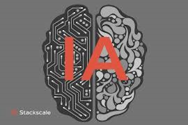

¿Qué es la inteligencia artificial?
Las computadoras son cada vez más inteligentes.
Pero... ¿qué significa y cuáles son sus limitantes?


La inteligencia artificial (IA) es la ciencia y la ingeniería de hacer máquinas inteligentes,
especialmente programas informáticos, según un artículo del Departamento de Ciencias de la
Computación
de la Universidad de Stanford, Estados Unidos, titulado ¿Qué es la inteligencia artificial?
Según la publicación, el desarrollo de máquinas inteligentes está relacionado con la tarea de usar computadoras para comprender la inteligencia humana y reproducirla. Es decir, la IA es la capacidad de una computadora digital o un robot controlado por computadora para realizar tareas comúnmente asociadas con seres inteligentes.
Según la Enciclopedia Britannica, los proyectos de IA son sistemas dotados de procesos intelectuales
característicos de los humanos, como la capacidad de razonar, descubrir significados,
generalizar o aprender de experiencias pasadas. Un ejemplo reciente es ChatGPT,
una herramienta de lenguaje que simula conversaciones y crea textos que se parecen
lo más posible a la interacción humana.
¿Qué es la inteligencia artificial?
23/Octubre/2024 | Angel Suarez